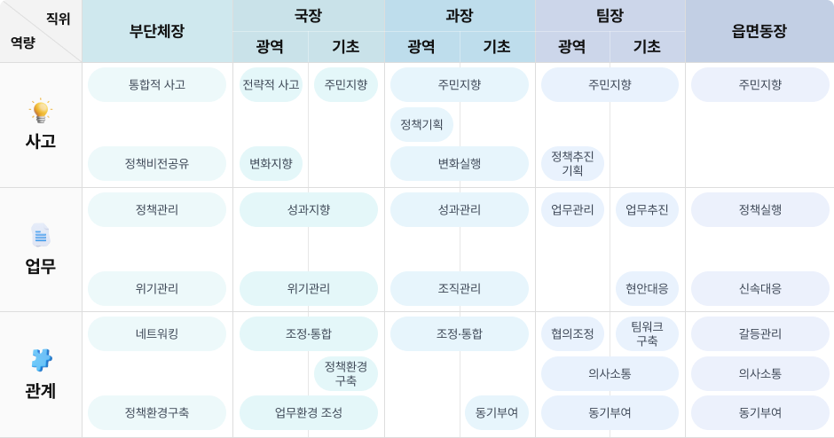

교육과정
역량교육
역량교육
역량교육의 개념
현업에서 수행해야 할 역할 및 업무와 유사한 모의과제(Simulation)를 활용하여 실습, 관찰, 피드백을 실시하는 교육생 주도의 참여형 교육
역량교육의 목적
핵심역량에 대한 체계적 학습을 통해 조직 내 직위에 요구되는 역할과 자신의 역량을 인식하고 관리자로서의 자질을 향상
역량교육 진행절차
-
STEP 01
실습 안내
-
STEP 02
실습(모의)
과제 이해 -
STEP 03
실습/관찰
-
STEP 04
동료 피드백
-
STEP 05
강사(Facilitator)
피드백 -
STEP 06
자기개발계획
수립
지방공무원 직위별 핵심역량
본 역량모델은 자치인재원 리더십 역량교육을 위해 도출한 내용으로, 국·과장급 역량평가의 평가역량과는 상이함

역량교육 운영체계
-
사전이해
교육에 필요한
기본개념이해(강의식)- 리더십의 이해
- 역량의 개념과 역량모델
- 역량교육과 역량평가
-
과제실습
관리자 직위에 따라
요구되는 리더십 역량에
대한 개인역량 확인/성찰- 모의상황 과제실습
→ 보고, 면담, 토론(회의), 현안처리 등
- 모의상황 과제실습
-
실천계획
리더십 역량 개발 및
현업 적용방안 탐색(실습)- 올바른 리더십 역량행동 도출
- 리더십 역량 실천방안
- 자기개발계획 수립(개별선택)
역량교육 운영과정
| 과정명 | 교육내용 | |
|---|---|---|
| 국·과장급 후보자 과정 | 단기과정(2일, 15시간) | 자치단체 국장, 과장 핵심역량 함양 |
| 기본(5급승진리더)과정 | 과정 내 리더십 교과 | 시·도 팀장, 시·군·구 과장, 읍면동장 직위별 핵심역량 함양 |
페이지 만족도 및 담당부서 안내
현재 페이지에 만족하십니까?
페이지 내용과 사용 편의성에 대한 의견을 들려주세요.